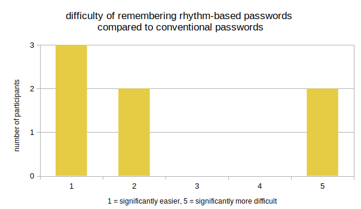

Results and Discussion
Strengths
- The level of feedback given will be familiar to the user and will neither confuse nor overwhelm the user.
- A simple design and a limited, but well thought out, choice of colours helps emphasize the important elements in the app.
Weaknesses
- Unless the user is careful they can still be subject to things that lower their integrity, such as shoulder-surfing.
- Limited visual and auditory feedback might worsen a user's ability to remember their secret rhythm.
Heuristic evaluation
We analysed the app based on Nielsen's 10 Usability Heuristics, due to the scope of the project some heuristics are more relevant than others.
- Visibility of system status: The large text at the top of each page serves as a way to show the status of the system.
- Match between system and the real world: We tried to use short texts or phrases instead of icons in order to increase the understanding, unless the meaning of an icon is obvious.
- User control and freedom: Since the project is about authentication, the freedom has to be limited. But within this limitation the user is free to enter any view possible at that time.
- Consistency and standards: The app uses icons that are commonly used and whose meaning is unambiguous. The yellow input-button looks the same and has the same behaviour on all pages where it is present.
- Error prevention: Due to the app-environment there is relatively little room for user-caused errors, unlike on websites. Error prevention has, however, been checked often throughout the development.
- Recognition rather than recall: Plenty of instructions are given to the user in each view and all options are always present on the screen.
- Flexibility and efficiency of use: Not really relevant to the project or its scope.
- Aesthetic and minimalist design: We have tried to keep the app's design as minimalistic as possible using as few elements as possible, and only three colours: black, white and yellow. The design is supposed to emphasize the yellow input-button in order to increase understanding.
- Helps users recognise, diagnose and recover from errors: The app shows Toast messages indicating whether the password was correct. This helps users to identify input mistakes without revealing the password.
- Help and documentation: The user is given the option to read a short "About"-section in the app and is also invited to this website for more information.
Empirical Evaluation
To evaluate the retentiveness of rhythm-based passwords, a small-scale field-study was conducted. Seven Participants aged between 20 and 60 where asked to set a rhythm-password. Then they had five minutes time to practice entering the password. After two and four hours respectively, they were asked to enter the password again. Furthermore, the participants were asked to compare the retentiveness and difficulty of inputting rhythm-based passwords to conventional passwords.
The study showed that the majority of participants though the rhythm-based password was easier to remember than conventional passwords. 85.7% of participants could successfully enter their rhythm-based passwords two and four hours after setup. Only one participant remembered it partially after two hours and could not login after four hours. So, the retentiveness seems to be quite good, even though, two participants though the rhythm-based password was significantly more difficult to remember. In particular, remembering the speed of the rhythm seemed to cause the difficulties.
When it comes to the difficulty of entering rhythm-based passwords the participants are split in two groups. About one half considered rhythm-bases passwords to be (significantly) easier to use while the other thought them to be more difficult.

Thus, rhythm-based passwords seem to be good to remember and one participant also commented that the ability to enter the rhythm without looking the screen was a great asset. Nonetheless, the perceived difficulty regarding usability strongly depends on the users’ personal preferences and remembering the speed of the rhythm can be a challenge.
Due to the very small number of participants, outliers can have a larger effect on the results. So, the results only give an insight into a small group of potential users and might not be representative for the general public.
Limitations
One thing we have heard multiple times in feedback is that this kind of authentication would not suit people who are tone-deaf or has little sense of music. This is highly relevant feedback and also allowing normal text-based passwords would be a way to solve this problem. However, this solution raises problems in the potential usage of rhythm-based passwords as people, when given the option, might opt for text-based passwords due to their familiarity with it. Why learn a whole new type of password when you can stick with what you are used to?
The app has also been critiqued in that shoulder-surfing still is possible despite the fact that this, in the beginning, was one of the issues that the app was going to solve. The reason why this hasn't been addressed to a significant extent is mainly due to the fact that the more secure version of the early prototypes was dropped. However, in our opinion the app is still at least equally secure as normal passwords would be, if not more so. It is still possible for the user to cover the screen with one hand while entering their rhythm with the other, or even hold the smartphone behind their back.
Conclusion
This project has given us a great opportunity to research interaction design, accessibility and mobile development and in regard to the scope we think the results have been satisfactory. However as this is the first prototype there are, as suspected, several limitations and problems with the design that should be addressed before moving on to further development. Further user testing using a large number of people would also be required to make any statistically significant conclusions. From a technical point of view these first results seem promising, but many improvements could be made to decrease the number of false positives and false negatives.